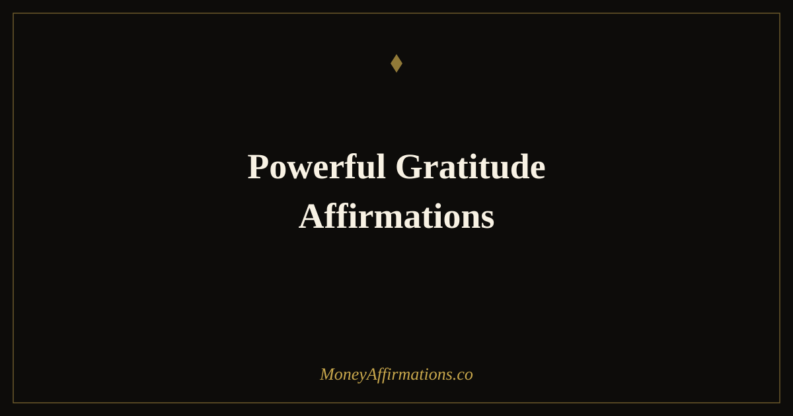

Powerful Gratitude Affirmations: 30 Statements to Transform Your Life

Gratitude is one of the most studied constructs in positive psychology, and the findings are remarkably consistent: people who practise it regularly report higher levels of wellbeing, better sleep, stronger relationships, and — crucially — healthier financial behaviour. But gratitude as a passive feeling is not the same as gratitude as a deliberate practice. These 30 powerful gratitude affirmations are designed to make it active. You are not waiting to feel grateful; you are training your mind to seek what is already present and working in your life, which changes the lens through which you perceive everything else. Done consistently, this shift has a measurable effect on how you relate to money, opportunity, and your own capacity to create more of both.
What are powerful gratitude affirmations?
Powerful gratitude affirmations are first-person, present-tense statements that anchor your attention to what you appreciate — your circumstances, your progress, your resources, and the possibilities available to you. Unlike vague positive thinking, they are specific enough to feel grounded and honest. They draw on the psychological mechanism of directed attention: whatever you consistently focus on expands in your awareness, shaping the interpretations, decisions, and actions that follow. The word "powerful" is not rhetorical flourish — it refers to the documented capacity of a consistent gratitude practice to alter neural pathways over time, making an appreciative perspective more automatic and less effortful.
For a broader foundation in daily abundance practice, explore the prosperity affirmations collection, which pairs well with gratitude work.
30 powerful gratitude affirmations
- I am grateful for the resources I have today and trust that more are on their way to me.
- I give thanks for the money that flows through my life, however it arrives.
- I appreciate the financial lessons I have learned, because they have made me wiser with money.
- I am thankful for every skill I possess, knowing each one is a source of future income.
- I recognise the abundance that already exists in my life and choose to build upon it.
- I am grateful for the relationships that support my growth and open doors for me.
- I give thanks for my health, which is the foundation of everything I am able to create.
- I am thankful for the home I have, the food I eat, and the safety I enjoy each day.
- I appreciate every small financial win, knowing that small wins compound into large ones.
- I am grateful for the ability to earn, to save, and to give with increasing freedom.
- I give thanks for the challenges that have required me to grow beyond my comfort zone.
- I appreciate the clarity that comes when I pause and count what is genuinely going well.
- I am thankful for the people who have invested their time and knowledge in me.
- I recognise that gratitude is a practice, and I am becoming more skilled at it each day.
- I give thanks for the financial opportunities that are already forming, even those I cannot yet see.
- I am grateful for the courage I have shown in difficult financial moments.
- I appreciate that money is a tool, and I am learning to use it with greater wisdom and intention.
- I am thankful for the abundance in nature, in relationships, and in ideas that surrounds me daily.
- I give thanks for every moment of rest that restores my energy and my focus.
- I am grateful for the capacity to dream and to act on those dreams with steady commitment.
- I appreciate the progress I have made, even when it feels slow, because it is real and it is mine.
- I am thankful for the financial resilience I have built through experience and honest reflection.
- I give thanks for the creativity that allows me to find solutions even in constrained circumstances.
- I am grateful that life continues to offer new beginnings and new opportunities to begin again.
- I appreciate the value of patience, knowing that the best outcomes are built over consistent time.
- I am thankful for the clarity that comes from knowing what I truly value and what I do not.
- I give thanks for the income I receive, treating it with respect and directing it with purpose.
- I am grateful for the present moment, which is the only place where transformation actually occurs.
- I appreciate all that has led me here, and I trust that what comes next will continue my growth.
- I am thankful for the life I have, and I am fully committed to making the very most of it.
How to use these affirmations
The most effective way to use these gratitude affirmations is to integrate them into a moment of the day when you are already still — first thing in the morning before checking your phone, or in the final few minutes before sleep. Choose five to eight statements that feel most relevant to where you are right now, rather than reading all thirty in a single pass. Depth of attention matters more than volume.
Read each chosen statement slowly, pause, and allow yourself to locate something real that the affirmation points toward. Gratitude is not effective when it is purely mechanical; it requires a moment of genuine recognition. If a particular statement feels too large to believe today, scale it down to something you can honestly affirm — "I am beginning to see the value in what I already have" is more useful than a statement that produces internal resistance.
Write your chosen affirmations in a journal once a week. The act of writing reinforces neural encoding and gives you a record of your evolving perspective over time. Many people find that reviewing their gratitude entries from six months prior is itself a powerful practice — it reveals how much has shifted that daily awareness tends to miss.
Why gratitude is a neurological amplifier for abundance
The psychological research on gratitude is unusually robust. Studies by Robert Emmons at UC Davis and Martin Seligman at the University of Pennsylvania consistently show that a regular gratitude practice produces measurable changes in wellbeing, motivation, and interpersonal behaviour — all of which have downstream effects on financial life.
At the neurological level, gratitude activates the brain's reward circuitry — specifically the medial prefrontal cortex — which is associated with learning, decision-making, and the evaluation of future outcomes. When this region is engaged, the threat-detection centres (the amygdala in particular) are relatively quieter, which means financial decisions made in a state of gratitude are more likely to be deliberate and long-term rather than reactive and short-term.
There is also a dopamine pathway involved. When you notice something good and name it explicitly, your brain releases a small amount of dopamine, which reinforces the behaviour of noticing. Over time, this creates a genuine perceptual shift: people with an established gratitude practice literally see more opportunity in their environment than those who do not, not because more opportunity exists, but because their attentional filters are tuned differently.
The connection to financial abundance is therefore not mystical — it is behavioural. A person who consistently perceives more resources, more possibility, and more capacity will make different decisions than one who perceives primarily scarcity, and those different decisions accumulate into different financial realities over months and years.
Tips to make them work faster
- Anchor to specifics. "I am grateful for the conversation that led to a new client last Tuesday" is neurologically more potent than a general statement, because specific memories activate more neural networks simultaneously.
- Use them at a transition point. The moments between waking and getting up, or between finishing work and entering home life, are natural pause points where new mental frames can take hold more easily.
- Pair with slow breathing. Taking three deep breaths before you begin affirmations brings the nervous system into a more receptive state, making the statements more likely to register emotionally rather than just intellectually.
- Track shifts over time. Keep a simple weekly note of one thing that felt easier or better than the previous week. This evidence-gathering reinforces belief in the practice and gives you data on your own progress.
- Combine with action. After your gratitude practice, spend two minutes identifying one concrete step you can take today toward the financial outcome you are affirming. Gratitude and action are most powerful together.
Frequently Asked Questions
Why are gratitude affirmations described as "powerful"?
Gratitude affirmations are described as powerful because they operate on two levels simultaneously: they interrupt the default negativity bias of the brain, and they direct conscious attention toward what is already present and working. Research in positive psychology shows that a consistent gratitude practice measurably increases wellbeing, reduces financial anxiety, and creates the psychological conditions in which people make better long-term decisions. The word "powerful" refers to this dual action — cognitive and emotional — not to any metaphysical mechanism.
How does gratitude change financial outcomes?
Gratitude changes financial outcomes through several well-documented pathways. It reduces impulsive spending driven by emotional lack, because people who feel abundant are less compelled to buy their way to comfort. It improves decision-making quality by keeping the prefrontal cortex engaged rather than the threat-detection centres. It also tends to improve relationships — with employers, clients, and collaborators — which has direct income implications. Gratitude does not generate money on its own, but it reliably changes the behavioural patterns that determine financial results over time.
Can I use powerful gratitude affirmations if I am in financial difficulty right now?
Yes, and this is arguably when they are most useful. When finances are tight, the brain defaults to scarcity thinking, which narrows perception and makes it harder to see opportunities or solutions. Gratitude affirmations are not about denying difficulty — they are about deliberately expanding your field of awareness so that you can notice what resources, relationships, and options you do have access to. Starting with small, genuinely believable statements (gratitude for a skill, a relationship, a small win) is more effective than reaching for statements that feel implausible given your current circumstances.
These affirmations work best when combined with a consistent daily practice. For more on building a prosperity mindset from the ground up, visit the prosperity affirmations collection — it covers the full range of financial wellbeing from contentment to growth.